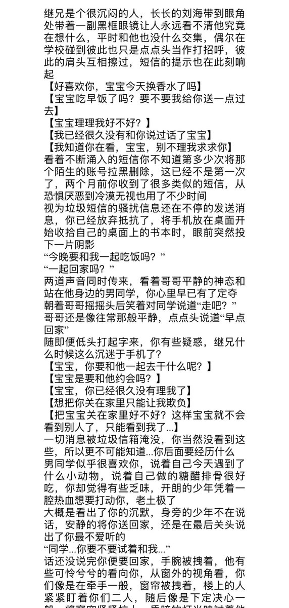
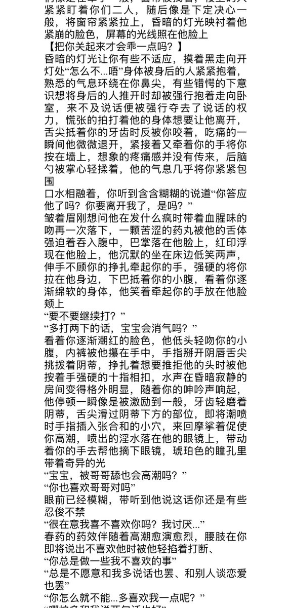
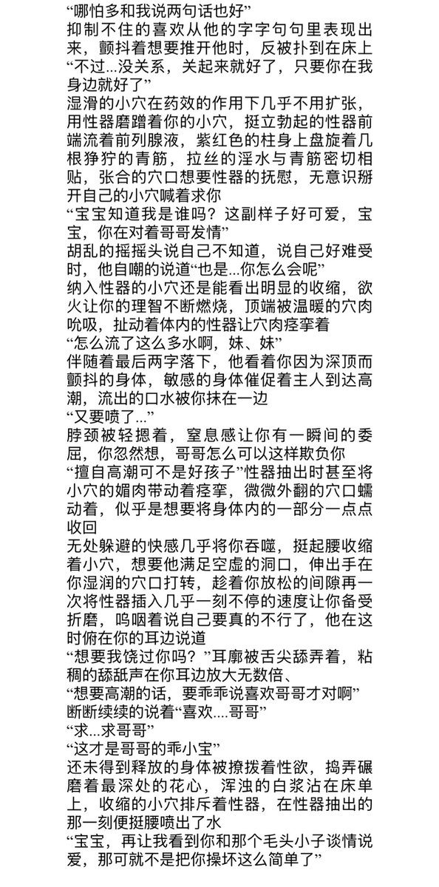

碎碎念生成器
@hellozj0412
@acclzd_clz 车厘子我们俩把日子过好比什么都强



荞麦厘子（年上制造者
@acclzd_clz
沉默寡言的继兄究竟是什么样的人呢？
【我知道你在看，宝宝，别不理我求求你】
“宝宝，你在对着哥哥发情”
“多打两下的话，宝宝会消气吗”
#一爱 #年上 #伪骨科 #春药 #强高
点赞转帖抽奶茶(>^ω^<) https://t.co/ZnffxFjRfB